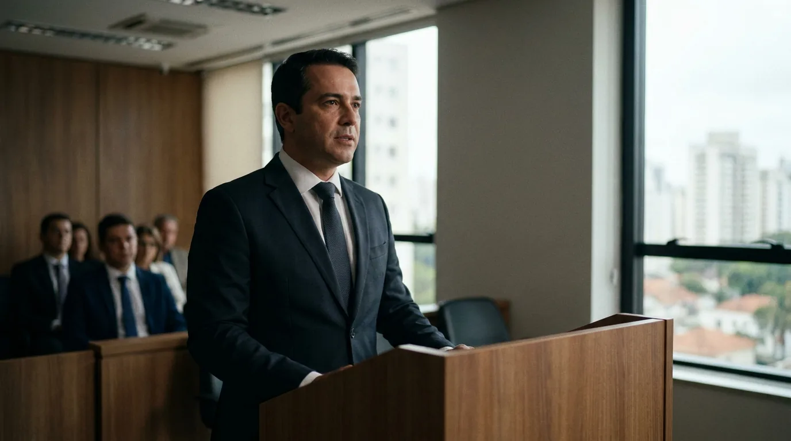
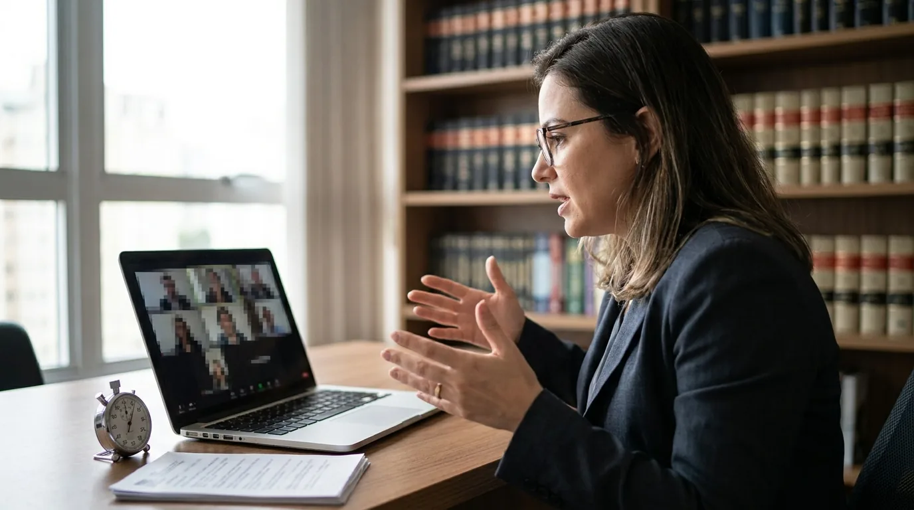
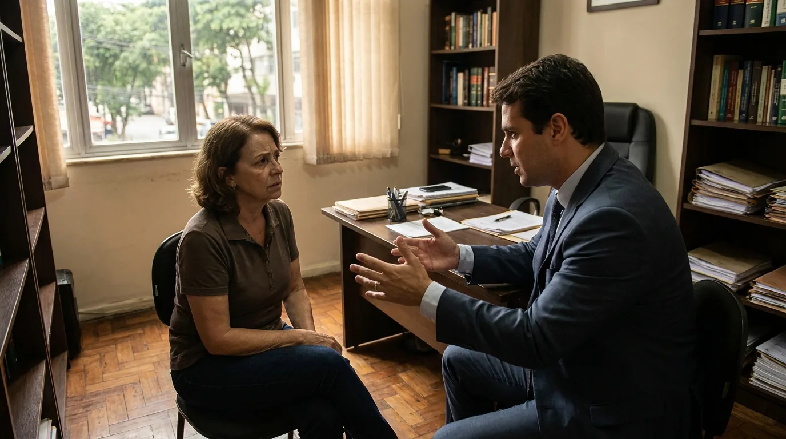
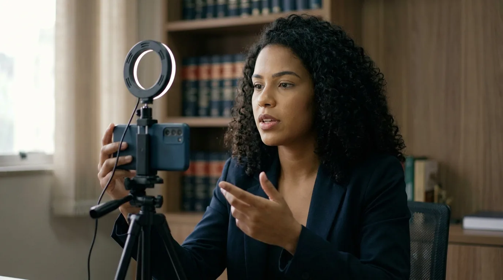
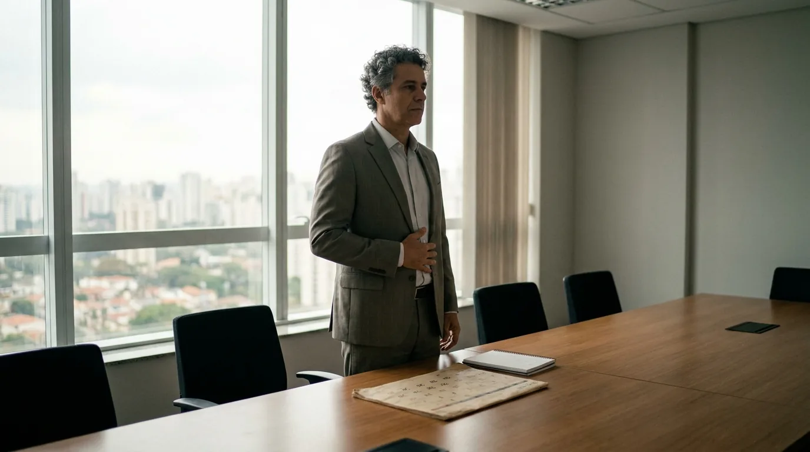

Oratória para Advogados: Como Falar com Autoridade

O Código de Processo Civil dá 15 minutos a cada parte para sustentar uma apelação. Do outro lado estão desembargadores que, muitas vezes, já têm um voto rascunhado. Nesse intervalo ninguém aprende oratória. Só aparece a que foi treinada antes.
A cena se repete fora do tribunal. Na primeira consulta, o cliente decide se confia em você; no vídeo curto, o espectador decide nos primeiros segundos se continua assistindo. Nos dois casos pesa a mesma oratória: clareza, ritmo e segurança.
Por isso a oratória deixou de ser enfeite de tribuno. Este guia mostra onde ela pesa, quanto tempo a lei dá em cada situação, técnicas, erros comuns, o medo de falar em público e um plano de treino de 30 dias.
Por que a oratória virou ativo profissional e de marca
Durante décadas, a oratória jurídica foi associada ao júri e a um estilo pomposo, cheio de latim. Esse modelo envelheceu: o juiz com a pauta lotada quer objetividade, o cliente quer entender o próprio caso e o público das redes some quando a fala fica chata.
Ao mesmo tempo, o advogado nunca falou tanto: audiências por videoconferência, reuniões online, lives e podcasts. Ou seja, a comunicação do advogado entrou no marketing do escritório, e a oratória passou a compor a reputação.
Quem fala bem também é chamado para eventos e entrevistas e recebe mais indicações de colegas. Oratória e networking para advogados, portanto, andam juntos.
Onde o advogado fala e quanto tempo tem
Antes de treinar a oratória, mapeie os palcos. Alguns têm tempo fixado em lei; outros, o limite da atenção de quem escuta.
| Situação | Tempo disponível | Fonte ou referência | O que a fala precisa entregar |
|---|---|---|---|
| Sustentação oral em tribunal (apelação, agravo de instrumento, recursos nos tribunais superiores, entre outros) | 15 minutos para cada parte, improrrogáveis | CPC, art. 937 | Uma tese central e o ponto que muda o voto |
| Alegações finais orais no cível | 20 minutos, prorrogáveis por 10 a critério do juiz | CPC, art. 364 | Resumo da prova e pedido claro |
| Alegações finais orais no processo penal | 20 minutos, prorrogáveis por 10 | CPP, art. 403 | Leitura da prova a favor da defesa ou da acusação |
| Debates no Tribunal do Júri | 1h30 para cada parte, 1h de réplica e 1h de tréplica (com mais de um réu, mais 1h e réplica e tréplica em dobro) | CPP, art. 477 | Narrativa que o jurado leigo entende |
| Primeira consulta com cliente | Definido pelo escritório | Prática do escritório | Diagnóstico simples, próximos passos e honorários |
| Vídeo curto para redes | Segundos a poucos minutos | Formato de cada plataforma | Uma dúvida explicada sem juridiquês |
Os prazos acima estão no Código de Processo Civil e no Código de Processo Penal. Nas alegações finais, o debate oral pode ser substituído por razões escritas quando a causa for complexa (CPC, art. 364, § 2º; CPP, art. 403, § 3º). Regimentos internos também têm regras próprias; confira o do tribunal em que você vai atuar.
Oratória jurídica na audiência e na sustentação oral
A sustentação oral é o momento mais técnico da oratória jurídica. Hoje o direito de sustentar vem do art. 937 do CPC, dos regimentos internos dos tribunais e do § 2º-B do art. 7º do Estatuto da Advocacia. O mesmo art. 7º assegura, no inciso X, o direito de usar da palavra, pela ordem, para esclarecer equívoco ou dúvida sobre fatos, documentos ou afirmações que influam na decisão. E o inciso XII permite falar sentado ou em pé. O texto completo está no Estatuto da Advocacia e da OAB.
Um detalhe evita confusão. O inciso IX do art. 7º ainda aparece no texto do Planalto e previa a sustentação "após o voto do relator". Só que o STF, na Ação Direta de Inconstitucionalidade (ADI) 1.105, julgada em 2006, declarou esse inciso inconstitucional. Na prática, vale a sequência do CPC: o relator expõe a causa e, em seguida, o presidente dá a palavra às partes.
O tempo regimental e as regras que pouca gente usa
O art. 937 do CPC fixa 15 minutos improrrogáveis para cada parte e lista onde cabe sustentação:
- apelação, recurso ordinário, recurso especial e recurso extraordinário;
- embargos de divergência;
- ação rescisória, mandado de segurança e reclamação;
- agravo de instrumento contra decisão sobre tutela provisória;
- outras hipóteses previstas em lei ou no regimento interno.
A Lei 14.365/2022 incluiu no Estatuto o § 2º-B do art. 7º. Ele admite sustentação no recurso contra decisão monocrática do relator que julgar o mérito ou não conhecer de apelação, recursos ordinário, especial e extraordinário, embargos de divergência, ação rescisória, mandado de segurança, reclamação, habeas corpus e outras ações de competência originária.
Dois parágrafos do art. 937 costumam passar despercebidos. O § 2º permite pedir, até o início da sessão, que o processo seja julgado em primeiro lugar, sem prejuízo das preferências legais. O § 4º autoriza o advogado com domicílio profissional em outra cidade a sustentar por videoconferência, desde que peça até o dia anterior à sessão.

Atenção: "improrrogável" quer dizer que o presidente pode cortar sua fala no minuto 15. Ensaie com cronômetro e saiba de antemão o que cortar. Se a sessão atrasar ou o colegiado sinalizar pressa, você reduz sem perder a tese.
Como estruturar 15 minutos que o colegiado escute
Os julgadores conhecem o relatório, e repetir os fatos gasta o tempo mais valioso da sessão. Uma estrutura que funciona:
- Abertura em uma frase (30 segundos). Diga quem você representa e qual é o pedido. "Represento a apelante e peço a reforma da sentença porque a prova pericial foi ignorada."
- O ponto que muda o resultado (6 a 8 minutos). Escolha um ou dois argumentos. Indique o documento exato: o número do ID ou do evento no processo eletrônico, ou a folha, se o processo for físico.
- A objeção antecipada (3 minutos). Responda ao melhor argumento do outro lado antes que alguém o levante.
- Fechamento (1 minuto). Repita o pedido com as mesmas palavras da abertura.
Somados, os blocos dão cerca de 12 minutos. A folga cobre interrupção ou pergunta do colegiado sem sacrificar o pedido. Para encurtar, reduza o item 2 a um argumento.
Na audiência de primeiro grau
No primeiro grau, a oratória é mais curta e dialogada. Ela aparece na pergunta de um fato só à testemunha ("A senhora viu o contrato ser assinado?", e não "A senhora poderia contar tudo o que sabe sobre a assinatura?"). E na impugnação feita com calma e registrada em ata. Nos 20 minutos de alegações finais, resuma a prova que favorece o seu cliente e termine no pedido, em vez de reler a petição inicial.
Oratória fora do tribunal: primeira consulta, vídeos, podcast e palestras
Muitos advogados treinam a oratória pensando só no juiz, mas a fala que mais pesa no faturamento costuma ser a da primeira consulta.
A primeira consulta: explicar o caso com clareza fecha contrato
O cliente chega ansioso, com a história embaralhada. Nessa hora, a oratória que transmite autoridade é a que organiza o problema dele em voz alta, melhor do que ele mesmo conseguiria, e sem termos difíceis.
Um roteiro simples para a consulta:
- Escute primeiro. Deixe o cliente contar a história inteira antes das perguntas técnicas.
- Devolva em três frases. "Pelo que entendi, o senhor foi demitido, não recebeu as verbas e tem mensagens que provam as horas extras. Correto?"
- Explique o caminho. Quais são as etapas, o que depende dele e o que depende do Judiciário.
- Seja honesto sobre incertezas. Nenhum advogado controla a decisão do juiz, e o cliente percebe quando alguém promete demais.
- Feche com o próximo passo. Documentos a separar, prazo para a proposta e forma de contato.

Vídeos, podcast, lives e palestras
A câmera amplifica a hesitação e o "né" repetido, mas também a segurança. Em vídeo, a oratória alcança gente que nunca pisaria num fórum.
O Provimento 205/2021 do Conselho Federal da OAB permite que o advogado participe de vídeos ao vivo ou gravados, debates e palestras virtuais, desde que observe os arts. 42 e 43 do Código de Ética e Disciplina (CED) e não use casos concretos nem apresente resultados (art. 5º, § 3º). O art. 42 do CED veda responder com habitualidade a consultas nos meios de comunicação e debater causa patrocinada por outro advogado; o art. 43 pede fim educativo, sem promoção pessoal. Por isso o vídeo explica o tema em tese, sem orientar o caso de quem pergunta.
Na divulgação de audiências e sustentações sem segredo de justiça, o art. 4º, § 2º, exige respeito ao sigilo e à dignidade profissional e veda mencionar decisões e resultados, salvo manifestação espontânea sobre caso já coberto pela mídia. A íntegra está no Provimento 205/2021.
Cada formato pede um ajuste:
- Vídeo curto: um tema, uma explicação, um gancho nos primeiros segundos. Veja ideias no guia de TikTok para advogados e no de vídeos para advogados com IA.
- Podcast: tom de conversa, frases curtas e exemplos do cotidiano. O guia de podcast jurídico mostra como montar um.
- Live: roteiro de tópicos e espaço para perguntas.
- Palestra: abertura com uma história ou pergunta, poucas ideias centrais e um fechamento que a plateia consiga repetir.
Quer que essas falas cheguem também a quem ainda não é seu cliente? A JuriDigital ajuda escritórios a transformar conhecimento técnico em conteúdo que o público entende e procura, dentro das regras da OAB.
Técnicas de oratória para falar com autoridade
Oratória com autoridade é mais técnica repetida do que dom. As técnicas abaixo servem para a sustentação e para o vídeo.
Estrutura em três atos
Toda boa oratória tem começo, meio e fim claros. No primeiro ato, você apresenta o problema. No segundo, desenvolve o conflito: os fatos, a prova, a dúvida do cliente. No terceiro, entrega a solução ou o pedido. Essa estrutura é a base do storytelling e funciona porque quem escuta acompanha e lembra melhor uma sequência com causa e efeito do que uma lista de argumentos soltos. A estrutura de sustentação vista acima é uma versão comprimida desses três atos.
Pausa, respiração e voz
A pausa é a ferramenta mais subestimada da oratória. Antes de uma frase importante, a pausa avisa que algo relevante vem aí; depois, dá tempo para a ideia assentar. Ela também substitui vícios como "é...", "tipo" e "então".
A respiração sustenta a voz. Quem respira só com o alto do peito fica sem ar e acelera. Treine a respiração abdominal: com uma mão na barriga e outra no peito, inspire pelo nariz em quatro tempos e solte o ar pela boca em seis. A mão da barriga sobe, a do peito quase não se mexe. Depois, fale durante a expiração, sem esperar o ar acabar. Quanto à voz, varie volume e velocidade: fale mais devagar nos pontos centrais e um pouco mais rápido nas transições.
Linguagem corporal e olhar
O corpo também fala. Postura ereta, pés firmes no chão e mãos visíveis transmitem segurança. Gestos acompanham a fala. No tribunal, alterne o olhar entre o relator e os demais julgadores. No vídeo, olhe para a lente.
Eliminar o juridiquês
"Data venia", "outrossim" e "mister se faz" afastam o cliente, e o juiz também os dispensa. Troque a expressão rebuscada pela direta. "O réu não pagou" comunica mais do que "o requerido quedou-se inerte quanto ao adimplemento". A oratória jurídica moderna é técnica no conteúdo e simples na forma.
Preparo com roteiro
O roteiro é um mapa: abertura e fechamento escritos por inteiro, tópicos centrais em palavras-chave. Decorar tudo deixa a fala robótica, e improvisar tudo deixa a fala confusa. Saiba de cor o começo e o fim e conduza o miolo pelos tópicos.
Treino gravado
Gravar a si mesmo incomoda, mas nada acelera tanto a oratória quanto assistir à própria fala. Na primeira gravação, observe só os vícios de linguagem; na segunda, a postura; na terceira, o ritmo.

Dica: antes de uma sustentação oral, grave a versão completa com cronômetro no celular e assista no dia seguinte. Você vai notar trechos que parecem óbvios na sua cabeça e confusos em voz alta.
Os erros que mais derrubam a oratória
- Ler a peça em voz alta. O colegiado já conhece o relatório. Reler sinaliza falta de preparo.
- Querer falar de tudo. Sete argumentos em 15 minutos viram nenhum argumento lembrado.
- Falar rápido demais. Nervosismo acelera a fala e engole as palavras finais.
- Ignorar o tempo. Ser cortado antes do pedido final desperdiça a sustentação inteira.
- Confrontar o julgador. Dá para ser firme sem ser agressivo, e a urbanidade é dever do advogado.
- Improvisar vídeos. Sem roteiro, o vídeo sai longo e confuso.
Quando essas técnicas entram na rotina, rendem também fora do fórum. Para organizar a presença do escritório em vídeo e conteúdo, dentro do Provimento 205, converse com um especialista da JuriDigital.
Medo de falar em público e plano de treino de 30 dias
Técnica sem prática fica no papel. Esta parte trata do medo e traz um plano para quem tem prazos correndo.
Como vencer o medo de falar em público
Sentir frio na barriga antes de falar em público é comum, inclusive entre advogados experientes. O objetivo não é eliminar o nervosismo, e sim impedir que ele controle a fala. Algumas estratégias ajudam:
- Prepare-se. Boa parte do medo vem do desconhecido, e roteiro e ensaio o reduzem.
- Comece pequeno. Grave para ninguém ver, depois para um colega, depois para um grupo pequeno.
- Foque na mensagem. Pense no que o ouvinte precisa entender, e não em como você está sendo avaliado.
- Chegue cedo. Conheça a sala, teste o microfone ou a câmera e respire com calma antes de começar.
- Aceite o erro pequeno. Uma palavra trocada não derruba ninguém; siga em frente.
Quem tem perfil reservado também desenvolve oratória e presença sem virar showman. O guia de marketing para advogados introvertidos mostra caminhos para isso. Se o medo for intenso a ponto de atrapalhar o trabalho, procure um psicólogo ou outro profissional de saúde.
Na prática: na primeira semana, grave só para você. Na segunda, mande a gravação a um colega de confiança e peça um único comentário.

Plano de treino de oratória em 30 dias
O plano abaixo pede de 15 a 20 minutos por dia, em quatro semanas mais dois dias de revisão; na última etapa, reserve de 30 a 40 minutos. Cada semana soma uma habilidade à anterior.
| Semana | Foco | Exercício diário | Entrega da semana |
|---|---|---|---|
| 1 (dias 1 a 7) | Diagnóstico e respiração | Gravar 2 minutos explicando um tema do seu dia; treinar respiração abdominal por 5 minutos | Lista dos seus três principais vícios de fala |
| 2 (dias 8 a 14) | Estrutura e clareza | Reescrever uma explicação técnica em linguagem simples, usando os três atos | Um roteiro de primeira consulta com abertura e fechamento escritos |
| 3 (dias 15 a 21) | Voz, pausa e corpo | Ler em voz alta variando velocidade e volume; gravar em pé, observando postura e gestos | Um vídeo de até 2 minutos explicando em tese uma dúvida frequente |
| 4 e revisão (dias 22 a 30) | Simulação real | Em dias alternados, ensaiar a sustentação de 15 minutos com cronômetro; nos outros, a versão curta e assistir à gravação anterior | Sustentação completa gravada e revisada, pronta para uso |
Ao fim dos 30 dias, compare a primeira gravação com a última. Depois, mantenha uma gravação por semana para a oratória não perder o ritmo.
Próximos passos para levar a sua oratória ao cliente
A oratória que convence o colegiado em 15 minutos é a mesma que tranquiliza o cliente na primeira consulta e segura quem assiste ao seu vídeo. Treine com método, respeite as regras da OAB e trate cada fala como parte da sua marca. E, quando quiser levar essa voz para mais gente, a JuriDigital monta a estratégia de conteúdo e presença digital para o seu escritório ser encontrado por quem precisa dele.
Perguntas frequentes sobre oratória para advogados
Quanto tempo o advogado tem para a sustentação oral?
Pelo art. 937 do CPC, são 15 minutos improrrogáveis para cada parte nos recursos e ações listados no artigo. Confira também o regimento do tribunal antes da sessão.
Posso fazer sustentação oral por videoconferência?
Sim. O § 4º do art. 937 do CPC permite ao advogado com domicílio profissional em cidade diferente da sede do tribunal sustentar por videoconferência, desde que faça o pedido até o dia anterior à sessão. A sessão virtual segue regras próprias de cada tribunal.
Oratória se aprende ou é talento?
Aprende-se. Há quem tenha mais facilidade, mas estrutura, pausa, respiração, postura e linguagem simples são técnicas treináveis. O plano de 30 dias acima mostra por onde começar.
Como melhorar a oratória jurídica sem fazer curso?
Com prática deliberada: grave explicações curtas, assista, corrija um ponto por vez e repita.
Advogado pode postar vídeo da própria sustentação oral?
Pode, em processo sem segredo de justiça, respeitando o sigilo e a dignidade profissional. O art. 4º, § 2º, do Provimento 205/2021 veda mencionar decisões judiciais e resultados obtidos nos processos em que o advogado atua, salvo manifestação espontânea em caso já coberto pela mídia.